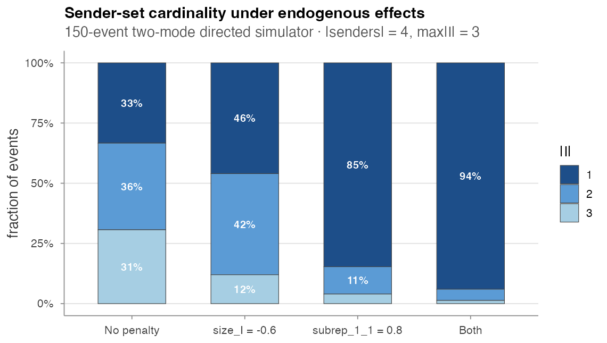
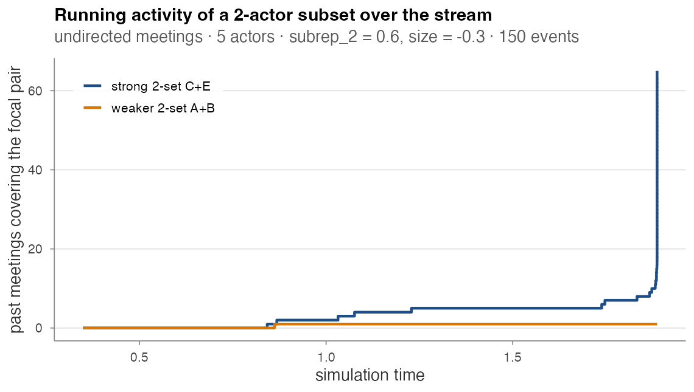

Hyperedge models
amore supports relational hyper event
models (RHEMs) — the extension of REMs from dyadic
(sender, receiver, time) events to set-valued
(I, J, time) hyperedges, where I is a set of
senders and J is a set of receivers. Following Boschi, Lerner & Wit
(2025), this lets a single event involve multiple actors per axis —
e.g. a paper authored by a co-author set citing a set of references, or
a multi-actor meeting (J = ∅).
Driver script for the experiments below:
paper/wiki/experiments/hyper_demo.R.
Data model
hl <- hyperedge_log(
I = list(c("alice", "bob"), c("alice", "carol"), c("bob", "carol")),
J = list(c("paperA"), c("paperA", "paperB"), c("paperB")),
time = c(1.0, 2.5, 4.0))
is_hyperedge_log(hl) # TRUE
hyperedge_sizes(hl)
#> I J time size_I size_J
#> 1 alice, bob paperA 1.0 2 1
#> 2 alice, carol paperA, paperB 2.5 2 2
#> 3 bob, carol paperB 4.0 2 1| Function | Purpose |
|---|---|
hyperedge_log(I, J, time) |
Validating constructor; sorts by time |
is_hyperedge_log(x) |
Structural predicate |
as_hyperedge_log(event_log) |
Promote a dyadic log (each row becomes a singleton on each axis) |
as_dyadic_log(h) |
Inverse — succeeds only when |I| = |J| = 1
everywhere |
hyperedge_sizes(h) |
Adds size_I and size_J columns |
For undirected hyperevents (e.g. multi-actor
meetings), pass J = list(character(0), ...) and use the
actor-only simulator below.
Subset repetition
The canonical hyperedge-native covariates from the paper (eq. 3-4):
hyperedge_activity(hl, I = c("alice", "bob"), J = "paperA", t = 5)
#> [1] 1 # one past event contains {alice, bob} and {paperA}
hyperedge_subrep(hl, I = c("alice", "bob", "carol"), J = "paperA",
t = 5, rho = 2, l = 1)
#> [1] 0.6666667 # 2 of the 3 size-2 subsets of I have co-fired with paperAFor dyadic events with |I| = |J| = 1,
hyperedge_subrep(rho = 1, l = 1) reduces to the standard
dyad event count.
Feature engine
compute_hyperedge_features() is the hyperedge analogue
of compute_endogenous_features():
feat <- compute_hyperedge_features(hl,
stats = c("activity", "subrep_1_1", "subrep_2_1"))| Stat name | Meaning |
|---|---|
"activity" |
hyperedge_activity on each row’s
(I, J)
|
"subrep_<rho>_<l>" |
directed subset repetition |
"subrep_<rho>" |
undirected subset repetition (l = 0) |
| any name in the 68-stat catalogue | delegated to compute_endogenous_features() after
as_dyadic_log() — requires every row to be dyadic |
Two-mode directed simulator
For citation-style data (Boschi et al. 2025 Section 5):
hl <- simulate_directed_hyperedge_events(
n_events = 50,
senders = paste0("author", 1:5),
receivers = paste0("paper", 1:5),
max_size_I = 2, max_size_J = 2,
baseline_rate = 0.3,
endogenous_stats = c("subrep_1_1", "size_I"),
endogenous_effects = c(subrep_1_1 = 0.8, size_I = -0.4))Supported endogenous stats: "size_I",
"size_J", "activity",
"subrep_<rho>_<l>". Output is a
hyperedge_log() with non-empty I and
J on every row.
What the two endogenous effects do
A 150-event sweep on 4 senders × 4 receivers, varying the endogenous terms one at a time:
| Specification | mean |I|
|
mean |J|
|
|---|---|---|
| No penalty | 1.97 | 1.60 |
size_I = -0.6 |
1.66 | 1.59 |
subrep_1_1 = 0.8 |
1.19 | 1.05 |
| Both | 1.07 | 1.14 |

-
size_I < 0broadens the size distribution toward smaller sender sets (|I| = 1jumps from 33 % to 46 %). -
subrep_1_1 > 0collapses the distribution onto pairs the log has already seen — and most repeating pairs are singletons, so|I| = 1dominates (85 % under the subrep-only spec). - Both combine: 94 % singleton sender sets.
This is exactly the levers the Boschi et al. (2025) framework exposes for shaping a citation-style stream.
Per-event cost is exponential in |V^I|, |V^J| because
the simulator enumerates every candidate (I, J) per event;
practical for small universes (≤ ~10 each side,
max_size ≤ 3).
Undirected meeting simulator
For undirected multi-actor meetings (Section 4 of the paper):
hl <- simulate_hyperedge_events(
n_events = 150,
actors = LETTERS[1:5],
max_size = 3,
baseline_rate = 0.3,
endogenous_stats = c("subrep_2", "size"),
endogenous_effects = c(subrep_2 = 0.6, size = -0.3))The simulator enumerates every subset of actors of size
min_size..max_size, scores each via the rolling event
history, draws an event proportional to its exp-score, and waits an
exponential time with rate equal to the total score. Output: a
hyperedge_log() with empty receiver sets.
Preferential attachment from subrep
When subrep > 0, a positive feedback loop locks in: a
subset that fires once becomes more likely to fire again. Tracking the
running hyperedge_activity of two focal pairs across a
150-event meeting stream:

One 2-actor pair ({C, E}) accumulates almost all the
co-attendance mass; the other ({A, B}) gets one event in
the entire stream. Under subrep_2 = 0.6, 146 of the 150
meetings contain the same pair. This is the kind of dynamic the
subrep_<rho> family is designed to detect and the
kind of runaway you should expect (or design against) when the effect is
strong.
Smooth effects on hyperedge data
Once features are computed, you can fit linear / TV / NL / TVNL
specifications via compare_models_smooth() — see Estimation. The case-control likelihood used
by compare_models_smooth() matches Boschi et al. (2025)
equation 8.